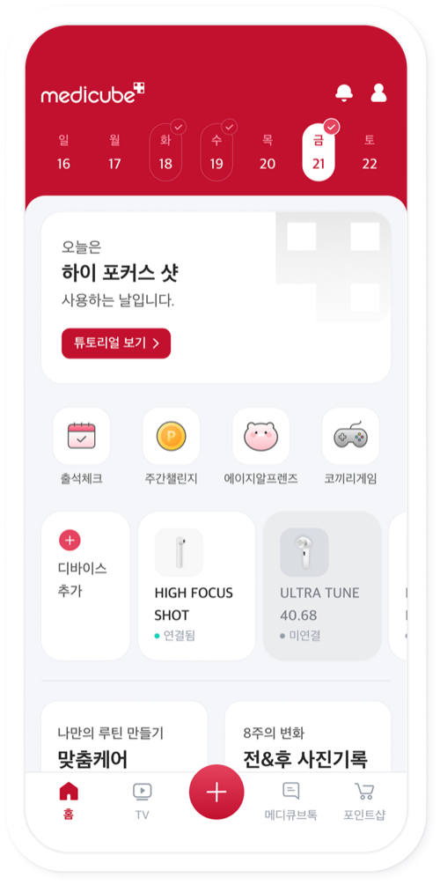
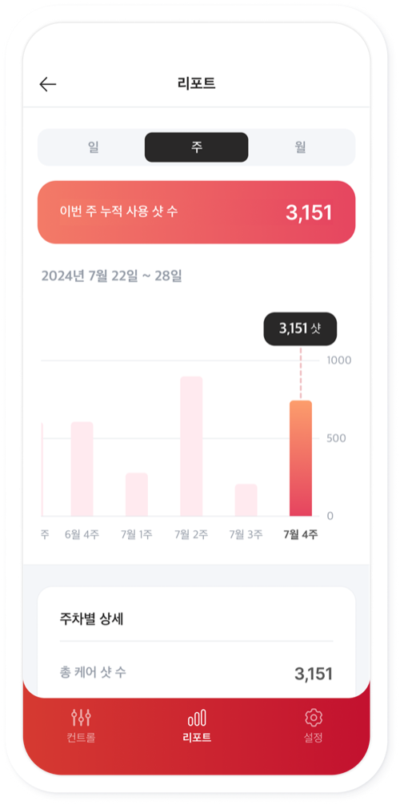

메디큐브 · 에이지알(AGE-R)
뷰티 디바이스 · 앱 연동
1차 출시 후 2차 개선

복잡한 연동을
한 번에 이해되는 경험으로
뷰티 디바이스 신규 출시로 처음 도입된 블루투스 연동 기능을 기획·디자인. 출시 후 발견된 오인지·CS 문제를 자동 인식과 1단계 컨트롤로 재설계해 두 차례에 걸쳐 개선했습니다.
기획
100%
디자인
100%
+16%p
전체 연동 비율
+20%
디바이스 2건 이상 연동 비율
-20%
연동 관련 CS 문의


